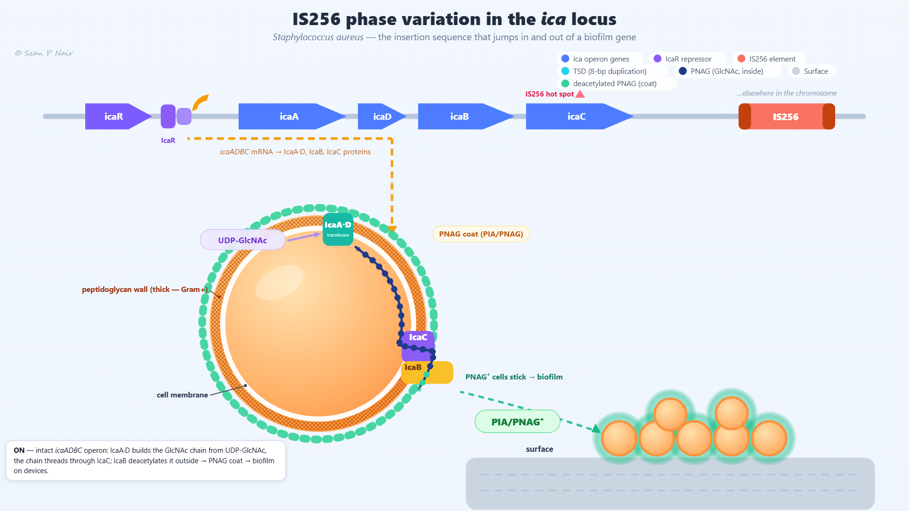
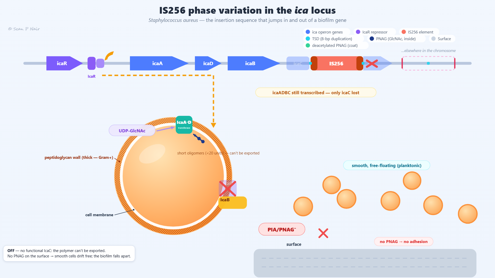
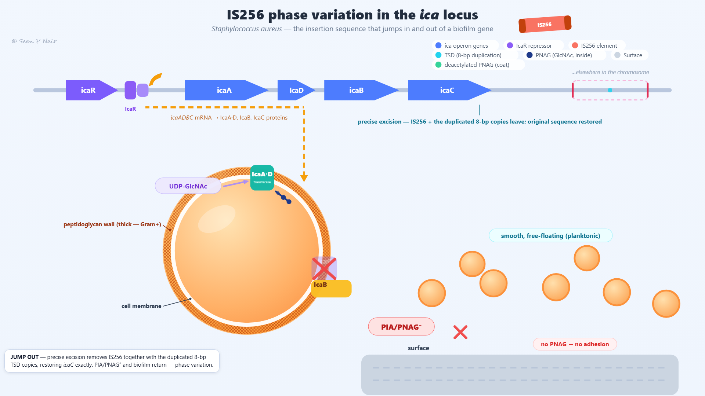
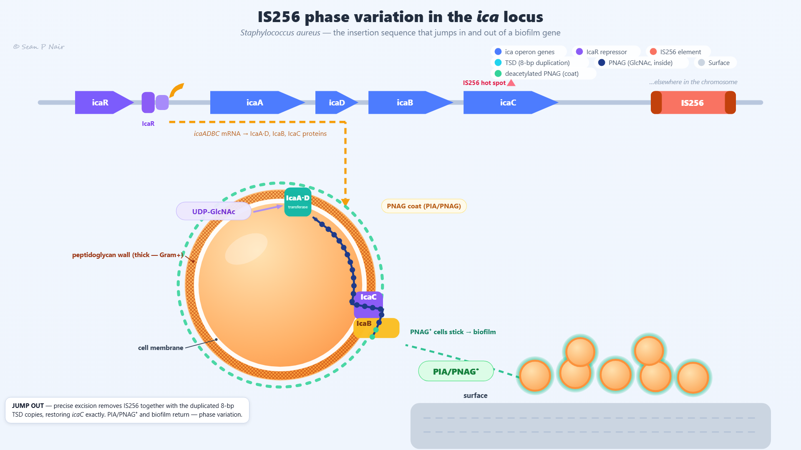

One film, one cell, one decision made twice. The insertion sequence IS256 jumps into the icaC gene of S. aureus, switching biofilm formation off; it then jumps out again, restoring it exactly. The whole film is a 36-second loop in four nine-second chapters — ON, JUMP IN, OFF, JUMP OUT. Timecodes like 0:17 are the animation's own clock: drag the timeline scrubber to them, or click a chapter dot.
Two colour stories run in parallel. Up top, colour tells you whose DNA it is and where it sits: blue arrows are the host's ica genes, and the red block is IS256 — watch which site it occupies. Down in the cell, colour tells you the chemical state of the polymer: dark-navy beads are acetylated GlcNAc inside the cell; they turn green at exactly one moment — when a unit passes IcaB on the way out. When a bead changes colour, chemistry has happened: that is deacetylation, and it is what makes surface PNAG different from the chain being built inside.
| What it is | Where you see it | |
|---|---|---|
| ica operon genes | The blue arrows along the top: icaA, icaD, icaB, icaC, one co-transcribed unit. While IS256 is in situ, the icaC arrow splits into two faded fragments flanking it — the region gets longer than the intact gene. | |
| IcaR repressor | The violet arrow and small dimer on its operator, between icaR and icaA. It keeps the operon off until released; this film runs with the operon already ON. | |
| IS256 element | The red block with dark-red end caps, ~1.3 kb in reality. Starts at its home site (right), flies to the icaC hot spot, then back. | |
| TSD — target-site duplication | The small cyan dots. Two appear at the two junctions of inserted IS256 (8 bp duplicated once per end); one marks the hot spot on the home site while the element is away. | |
| Surface | The grey bar at the bottom — a medical-device surface. Biofilm cells sit on it; when PNAG disappears they drift off. |
| What it is | What it does, and when | |
|---|---|---|
| PNAG (GlcNAc, inside) | The dark-navy beads linked by a backbone line — acetylated monomers of the chain being built. Inside the cell only. | |
| Deacetylated PNAG (coat) | The green beads — the same units after IcaB strips their acetyl groups on exit. Also the coat rings around the cell and the soft halos on biofilm cells. | |
| IcaA·D — transferase | The teal membrane block where the chain is built, fed by UDP-GlcNAc. A peristaltic beat every couple of seconds pushes one new unit in at the growing end and advances the whole strand. | |
| IcaC — the channel | The violet box straddling the peptidoglycan wall. The only door out of the cell for this polymer; a red ✕ appears over it while IS256 sits in its gene. | |
| IcaB — deacetylase | The amber block sitting outside the cell. It works as each unit crosses out past it, and flashes a halo when it does. Navy→green happens here, not at the membrane. | |
| UDP-GlcNAc | The lavender pill — the substrate supply feeding into IcaA·D. Present in every chapter. | |
| icaADBC mRNA | The amber dashed line flowing from the operon to the cell — and it keeps flowing in every chapter, even while icaC is broken. It never gets a ✕ (no polar effect). | |
| Blocked function | The red ✕. Over the downstream icaC fragment and over the IcaC channel while IS256 is in situ; beside the PIA/PNAG chip when the coat is gone. |
icaC (lowercase, top of frame) and IcaC (capitalised, in the cell wall) are not the same object. The gene is DNA; the protein is the channel it encodes. Inserting IS256 breaks the gene, but a working channel needs a functional transcript to be made — and on excision the reverse lag shows: the gene reads as one closed arrow the instant IS256 takes off, yet the ✕ stays over the IcaC channel until the element lands back home. Genetics can change faster than the protein machinery does.
S. aureus, one cell and its neighbourhood on a device surface. Four chapters, nine seconds each; the loop is seamless — frame 0 is identical to frame 36.

The intact icaADBC operon is transcribed — the amber dashed mRNA line runs from the gene arrows into the cell throughout. The IcaA·D transferase builds a chain of β-(1→6)-linked GlcNAc units from UDP-GlcNAc, adding one at the growing end with each peristaltic beat; the whole strand advances in lockstep so every bead travels the same path: anchor → channel → exit. Units stay navy (acetylated) while inside and turn green (deacetylated) exactly as they cross out past IcaB — a halo flash marks each conversion. Exported units join the PNAG coat, which thickens layer by layer during the chapter; coated cells adhere to the device surface and stack into a biofilm.
Look for: the navy→green switch happens at IcaB, not at the membrane — and in steady state exactly three trailing beads are green. The coat rings advance one bead-pitch per beat, in step with the secreted chain.
The transposase tnp256 cuts IS256 out of its home site and carries it, cut-and-paste, to the documented hot spot inside icaC. Insertion duplicates 8 bp of target DNA once at each end — so two identical TSD copies flank the element (the two cyan dots), and the gene is not replaced but split: the icaC–IS256–icaC region is longer than the original gene.
Here is the counterintuitive part. Because icaC is the last gene of the operon, breaking it has no polar effect: transcription keeps running (the amber pill says so — "icaADBC still transcribed — only icaC lost"), IcaA·D and IcaB stay up, and chain synthesis continues. But with no functional IcaC channel there is no door out of the cell, so the chain retracts to a short trapped oligomer. The coat fades, cells lose adhesion and drift free.
The trap is at export, not synthesis. If you saw "operon off" written on this chapter it would be wrong: the arrows are lit, the mRNA line flows, substrate keeps feeding in. The polymer is still being made — it simply cannot leave. That distinction (gene intact vs protein functional) is what makes the JUMP OUT chapter's lag meaningful.

This is the phase-variant phenotype: smooth, non-adherent, free-drifting cells. In a real culture these are not a separate species or a new mutation lineage — they are the same clone with IS256 in icaC, and they can revert at any division.
Do not read "OFF" as "the operon is off". The blue gene arrows stay lit, the amber mRNA line keeps flowing, UDP-GlcNAc still feeds IcaA·D. Everything upstream of export works; only the IcaC channel is missing. If a question asks where synthesis is blocked in this chapter, the answer is the membrane exit, not transcription or polymerisation.

Precise excision cuts out IS256 together with one copy of each duplicated 8-bp pair, so the original single copy remains and icaC is restored base-for-base — no scar, no leftover. The cyan TSD dots disappear from the gene as the element departs: they leave with it.
Note the lag: the gene reads intact immediately at take-off, but the channel ✕ persists until IS256 lands home — the broken protein machinery turns over more slowly than the genome changes. Once the channel reopens, the chain re-threads anchor-first through IcaC, the coat rings rebuild layer by layer, and the cells return to the surface one by one as their halos bloom.

This is phase variation in a real infection. In S. aureus, spontaneous IS256 insertion into icaC yields PIA/PNAG-negative variants that revert by precise excision at roughly 1–5×10⁻⁹ per cell division (Kiem et al. 2004, strain SA204); in S. epidermidis, ~30% of PIA-negative isolates carry IS256 in icaA/icaC (Ziebuhr et al. 1999). One clone, two phenotypes, switching both ways — a population hedge: while the PNAG⁺ majority builds biofilm on devices, the rare PNAG⁻ minority stays free-floating, ready to switch back when conditions change.
Most teaching animations are simplified somewhere. These are the places this one is, so the exaggerations are not mistaken for scale:
Answers are hidden — have a go first. If you can answer these, you have followed the animation.
Because icaC is the last gene of the co-transcribed operon, so breaking it has no polar effect on icaA/icaD/icaB — those proteins are still made. But IcaC is the channel that externalises the polymer: with no functional channel the chain cannot leave the cell and retracts to a short trapped oligomer. No coat, no adhesion, no biofilm. The block is at export, not synthesis.
They mark target-site duplications (TSDs). Cut-and-paste transposition cuts between two imperfectly repeated 8-bp sequences at each junction, so the target sequence is duplicated once per end — two identical copies flank the inserted element. Watch them both disappear from icaC when IS256 excises: they leave with it.
Because insertion duplicated the target 8 bp once at each end, the in-situ region holds two copies of that sequence. Precise excision removes IS256 together with one copy of each duplication, leaving the original single copy in place — so the restored gene is base-for-base identical to the pre-insertion sequence.
The acetyl groups: navy is acetylated GlcNAc (PIA-like), green is deacetylated PNAG. The change happens at IcaB — an enzyme sitting outside the cell, acting as each unit crosses out past the IcaC channel mouth. It matters because surface chemistry differs from intracellular chemistry: the same chain is only "PNAG" once it has been exported and deacetylated.
The gene: icaC reads as one closed arrow the instant IS256 takes off, while the ✕ over the IcaC channel lags until the element lands home. The genome changes instantly; the protein machinery has to turn over first. Phenotype can lag genotype — a general lesson in how cells work.
Phase variation: IS256 spontaneously inserts into icaC (PNAG⁻, smooth) and precisely excises out of it again (PNAG⁺ restored), at ~10⁻⁹ per cell division in each direction. One genotype, two reversible phenotypes — the population carries both at once as a hedge, so whichever conditions favour is already represented.
IcaB is drawn on the outer face of the membrane, and the colour split follows IcaB's exit, not the membrane: beads stay navy across the whole peptidoglycan wall and channel, then turn green — with a halo flash at each conversion — only once they have crossed out past IcaB. Even in steady state the last three trailing units are green while everything upstream is navy.
All five genes are read as one mRNA: icaADBC is a single co-transcribed operon driven by one promoter in that intergenic region, where IcaR binds its 28-bp operator. So when the repressor sits on the DNA no transcript is made and none of the machinery — IcaA·D, IcaB or IcaC — exists; when it leaves, the whole line comes back together at once. Notice this is a different lever from IS256: IcaR controls whether the genes are read (transcriptional control), while IS256 breaks one gene's product structurally.
Glucosamine (GlcNAc), linked β-(1→6). The IcaA·D box at the top of the cell adds one unit per beat from UDP-GlcNAc, the pill feeding into it — a nucleotide-sugar donor. And the transferase needs both partners: IcaA on its own transfers poorly, so IcaD is its required accessory subunit (which is why the film always draws them as one box).
IcaA·D by itself builds only short oligomers — under ~20 units (the film's trapped three-bead stub is that limit, drawn small for legibility). Extending them into full-length polymer and pushing it out across the membrane are both jobs of the IcaC channel. So in OFF synthesis keeps happening but nothing leaves: production without export.
We're very sure it does land there — in S. aureus SA204 the PIA-negative variant carries IS256 inside icaC, and in S. epidermidis roughly a third of PIA-negative isolates have IS256 in the ica locus (Kiem 2004; Ziebuhr 1999). But why this site is preferred is not fully explained — it's a documented pattern, not an established mechanism. The film shows what we've observed; "hot spot" labels a question that is still open.
Each peristaltic beat pops a fresh unit in at the growing end beside IcaA·D while the tip unit exits through IcaC toward the coat — production equals export, so net length stays constant. That's why the film reads as flow (a conveyor) rather than grow-then-shrink: if synthesis stopped you would see retraction; if export failed you would see a chain growing trapped inside.
The ON / PIA/PNAG⁺ state — the deacetylated PNAG coat is exactly the adhesive layer on abiotic surfaces, so it's the coated cells that colonise devices. From a non-biofilm-forming isolate you'd expect IS256 inserted in icaC (a ~1.3 kb PCR product across the site), with function restorable by precise excision after passage — the same reversible switch the film animates.